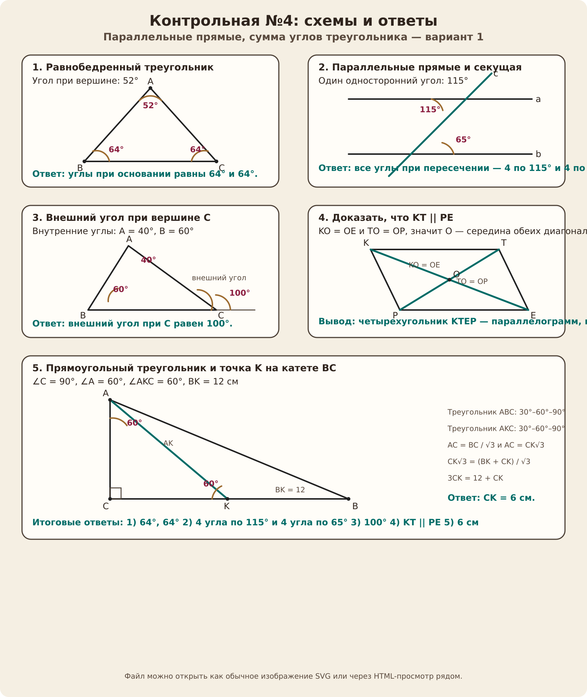

Контрольная работа №4
Локальный просмотр для отправки или печати: ниже собраны схемы и короткие ответы по варианту 1.

Короткие ответы
1. Углы при основании: 64° и 64°.
2. Всего получается 4 угла по 115° и 4 угла по 65°.
3. Внешний угол при вершине C равен 100°.
4. KT || PE, потому что диагонали KE и TP пересекаются и делятся пополам.
5. CK = 6 см.
Промпт для внешнего ChatGPT или генератора
Реши контрольную работу по геометрии и оформи ответ аккуратно, на русском языке, с короткими пояснениями и простыми чертежами для каждого задания. Текст заданий: 1. Угол при вершине равнобедренного треугольника равен 52°. Найдите углы при основании этого треугольника. 2. Прямые a и b параллельны, прямая c — секущая. Один из односторонних углов при этих прямых равен 115°. Найдите остальные углы, образованные при пересечении. 3. В треугольнике ABC угол A равен 40°, угол B = 60°. Найдите внешний угол треугольника при вершине C. 4. Отрезки KE и TP пересекаются в точке O, причём KO = OE и TO = OP. Докажите, что KT || PE. 5. В треугольнике ABC известно, что ∠C = 90°, ∠A = 60°. На катете BC отметили точку K так, что ∠AKC = 60°. Найдите отрезок CK, если BK = 12 см. Требования к ответу: - сначала дай краткие ответы по пунктам; - затем покажи решение каждого задания по шагам; - для каждого пункта добавь схематичный чертёж с подписями точек и углов; - не используй слишком длинные объяснения.